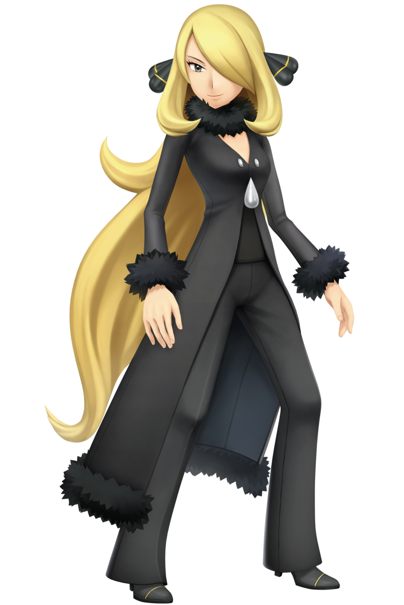
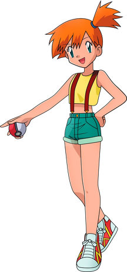

Cintia
Cynthia (シロナ Shirona) is an archaeologist and the Pokémon Champion of the Sinnoh region, where Professor Carolina, her grandmother, runs the Pokémon Research Lab in Celestic Town.


Cynthia (シロナ Shirona) is an archaeologist and the Pokémon Champion of the Sinnoh region, where Professor Carolina, her grandmother, runs the Pokémon Research Lab in Celestic Town.

Misty es amiga de Ash Ketchum y una de sus compañeras de viaje originales . Anteriormente fue la Líder de Gimnasio de Ciudad Celeste , y debutó en el primer episodio de la serie Pokémon , "¡ Pokémon: Te elijo a ti! ". También es la protagonista principal del episodio " Cerulean Blues " de Crónicas Pokémon .
Serena es un personaje de la serie Pokémon . Es Entrenadora Pokémon , Artista de la región de Kalos , Coordinadora en la región de Hoenn y compañera de viaje de Ash Ketchum en Kalos. Su principal objetivo es ser nombrada Reina de Kalos , el máximo prestigio que pueden alcanzar los Artistas Pokémon .